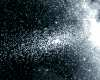
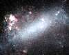
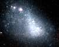
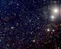
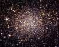
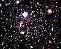
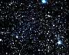
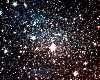
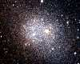

| Sagittarius Dwarf |
|---|
|  |
Lying on the far side of our galaxy this dwarf was discovered as recently as 1994.
It is slowly being ripped apart by our galaxy. |
| Ursa Major II |
|---|
|
This galaxy was discovered in 2006. It is one of the smallest and faintest
galaxies known, and it is too faint to appear on a normal photograph. |
| Large Magellanic Cloud |
|---|
|  |
The largest of the satellite galaxies and also the fourth largest galaxy in the
Local Group. This galaxy is a large bright object in southern hemisphere skies
and it is the brightest galaxy in the sky. It contains several billion stars and
many stars are still forming in it, most notably in the Tarantula nebula, a huge
concentration of gas and dust over 2000 light years in diameter. A supernova
exploded in the Large Magellanic Cloud in 1987 and observations of the expanding
supernova remnant provided accurate distance measurements to the galaxy. |
| Small Magellanic Cloud |
|---|
|  |
Despite its name, this galaxy is fairly large for a dwarf galaxy. It contains at
least several hundred million stars and is easily visible with the naked eye from
the southern hemisphere. Like the Large Magellanic Cloud, there is still a lot star
formation taking place within it. |
| Boötes Dwarf |
|---|
|  |
This galaxy was discovered in 2006. It is one of the faintest galaxies ever
discovered. It is too faint to appear on a normal photograph. It can be detected
only by carefully counting the faint stars in this part of the sky. |
| Ursa Minor Dwarf |
|---|
 |
Discovered in 1954, this is a very puny galaxy. Although it is a nearby galaxy
it is far to dim to be seen with anything but a powerful telescope. All of the
stars in this galaxy are at least ten billion years old, the galaxy is too small
to allow it to hold on to gas and dust to allow any new star formation. |
| Sculptor Dwarf |
|---|
|  |
Discovered by Harlow Shapley in 1937. It is probably twice the size of the Ursa
Minor galaxy, but all its stars seem to be just as old. |
| Draco Dwarf |
|---|
|  |
Discovered at the same time as the Ursa Minor dwarf galaxy in 1954, this galaxy
is almost identical in size and consists of only very old stars. |
| Sextans Dwarf |
|---|
|  |
This galaxy was discovered in 1989. It is a very low luminosity galaxy but seems
to be rather bigger than the Ursa Minor and Draco galaxies. |
| Ursa Major I |
|---|
|
This galaxy was discovered in 2005. It is another exceptionally faint galaxy
rather like the Boötes Dwarf. |
| Carina Dwarf |
|---|
|  |
Discovered in 1977, this is another tiny dwarf galaxy. However most of its stars are
slightly younger at about 7 billion years old than in most of the other tiny dwarf
galaxies. |
| Fornax Dwarf |
|---|
|  |
Discovered at the same time as the Sculptor dwarf galaxy in 1937, it is several times
larger than the smallest dwarf galaxies and contains several million stars. Its
stars range in age from three to ten billion years old. This galaxy also has six
globular clusters orbiting it. |